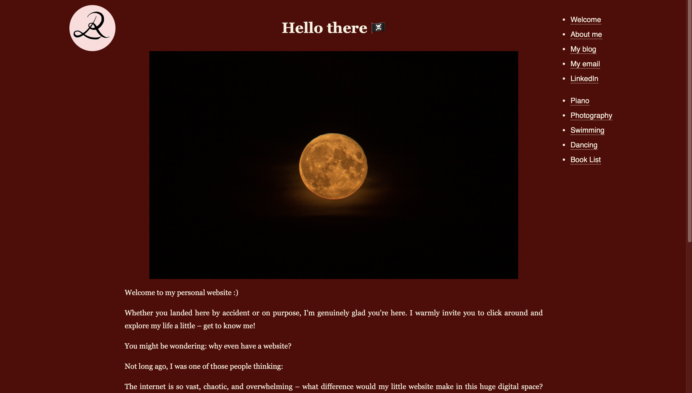

Hi I am Lissy!
I am very happy seeing you here!
Welcome to my personal website :)
Whether you landed here by accident or on purpose, I'm genuinely glad you're here. I warmly invite you to click around and explore my life a little – get to know me!
You might be wondering: why even have a website? Fair.
Not long ago, I was one of those people thinking: The internet is so vast, chaotic, and overwhelming – what difference would my little website make in this huge digital space? More importantly, who am I to even have one? Who would want to visit my page, let alone find it? I used to think websites were for important people – people who need one for career reasons or people who are simply famous or extremely cool.
But, then I got convinced by my friends and my ex-boyfiend that a personal website is pretty cool.
So — there are so many good reasons to start building your own little, simple, maybe even plain website right now. Your personal space, your niche on the web. ;) Let's make us extremely cool ourselves ;)
The first version of my website looked like this and then like that for a long time:

(Yeah, I know you would not have guessed that, but I love red and do not prefer a boring conventional appearence. Hence, my old website might be not the prettiest to look at.) But eventually, I decided to pretty it up with the ET-Jekyll Theme so that it's not that challenging to look at it anymore. I am not sure if I fully like that, since it's a bit boring, but for now that's an acceptable state.I might add some blog posts and some thoughts here as well, but if you are interested in diving into my world of thoughts, my "Gedankenwelten", follow this path.